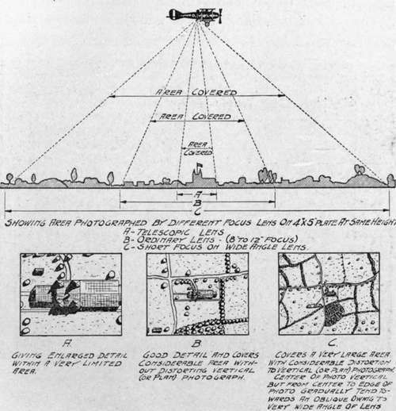
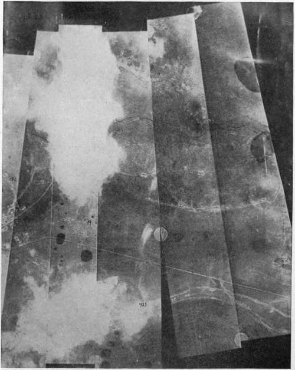

The Question Of Plate Size And Shape
Description
This section is from the book "Airplane Photography", by Herbert E. Ives. Also available from Amazon: Airplane photography.
The Question Of Plate Size And Shape
Plate size is determined by a number of considerations, scientific and practical. If the type of lens is fixed by requirements as to definition, then the dimensions of the plate are limited by the covering power. From the standpoint of economy of flights and of ease of recognizing the locality represented in a negative, by its inclusion of known points, lenses of as wide angle as possible should be used. If the focus is long, this means large plates, which are bulky and heavy. If the finest rendering of detail is not required a smaller scale may be employed, utilizing short focus lenses and correspondingly smaller plates. Thus a six inch focus lens on a 4 X 5 inch plate would be as good from the standpoint of angular field as a 12 inch on an 8X10 inch plate. This is apt to be the condition with respect to most peace-time aerial photography, which may be expected to free itself quickly from the huge plates and cameras of war origin.
For work in which great freedom from distortion of any sort is imperative, small plates will be necessary, for two reasons. One is that the characteristic lens distortions are largely confined to the outlying portions of the field. The other is that a wide angle of view inevitably means that all objects of any elevation at the edge of the picture are shown partly in face as well as in plan, which prevents satisfactory joining of successive views (Fig. 128). In making a mosaic map of a city, if a wide angle lens is employed with large plates, the buildings lying along the junctions of the prints can be matched up only for one level. If this is the ground level, as it would be to keep the scale of the map correct, the roofs will have to be sacrificed. In extreme cases a house at the edge of a junction may even show merely as a front and rear, with no roof, while in any case the abrupt change at these edges from seeing one side of all objects to seeing the opposite side is not pleasing.
Fig. 128. - Diagram showing relationship between focal length and area covered by plate.
The table in a preceding section gives the relation of plate size to focal length found best on the whole for military needs. Deviations from these proportions in both directions are met with. In the English service the LB camera, which uses 4X5 inch plates, is equipped with lenses of various focal lengths, up to 20 inches. The German practice, as well as the Italian, was almost uniform use of 13X18 centimeter plates for all focal lengths. Toward the end of the war, however, some German cameras of 50 centimeter focal length were in use employing plates 24X30 centimeters.
It will be recognized that these plate sizes are chosen from those in common use before the war. A similar observation holds with even greater force on the question of plate shape. Current plate shapes have been chosen chiefly with reference to securing pleasing or artistic effects with the common types of pictures taken on the ground. These shapes are not necessarily the best for aerial photography. Indeed the whole question of plate shape should be taken up from the beginning, with direct reference to the problems of aerial photography and photographic apparatus.
A few illustrations will make this clear, taking Fig. 17 as a basis. If it is desired to do spotting (the photography of single objectives), the best plate shape would be circular, for that shape utilizes the entire covering area of the lens. If it is desired to make successive overlapping pictures, either for mapping, or for the production of stereoscopic pairs, a rectangular shape is indicated. If the process of plate changing is difficult or slow, it is advisable, in order to give maximum time for this operation, to have the long side of the rectangle parallel to the line of flight (indicated by the arrow). If economy of flights is a consideration, as in making a mosaic map of a large area, it is advantageous to have as wide a plate as the covering power of the lens will permit. Reference to Fig. 17 shows that this means a plate of small dimensions in the direction of flight. If the changing of plates or film is quick and easy, the maximum use of the lens's covering power is made by such a rectangle whose long side approximates the dimensions of the lens field diameter. This is in fact the choice made in the German film mapping camera (Figs. 61 and 63), whose picture is 6 X 24 centimeters. An objection to this from the pictorial side, lies in the many junction lines cutting up the mosaic. Another objection, if the plane does not hold a steady course, is the failure to make overlaps on a turn. (Fig. 62.) Here as everywhere the problem is to decide on the most practical compromise between all requirements.

Fig. 17. - Possible choices of plate shape.
Fig. 62. - Method of joining and printing film from German camera.
Continue to:
Tags
camera, lens, airplane, aerial, film, exposure, photography, maps, birdseye